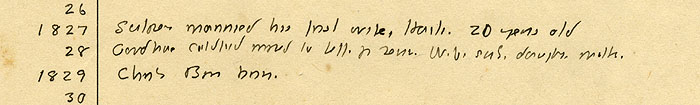

26:
1827: Sutpen married his first wife, Haiti. 20 years old
28: Goodhue Coldfield moved to Jeff. for [
illegible
]. Wife, sister, daughter, mother.
1829: Charles Bon born.
30:
THE CLIFTON WALLER BARRETT COLLECTION | UNIVERSITY OF VIRGINIA